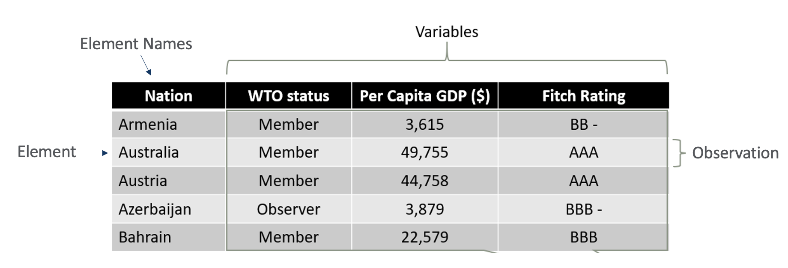
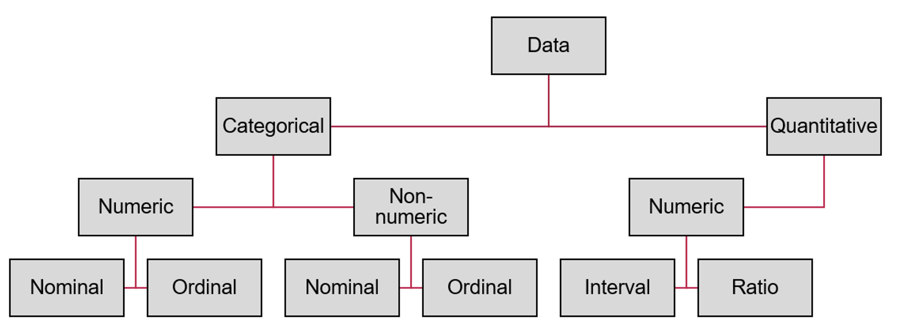
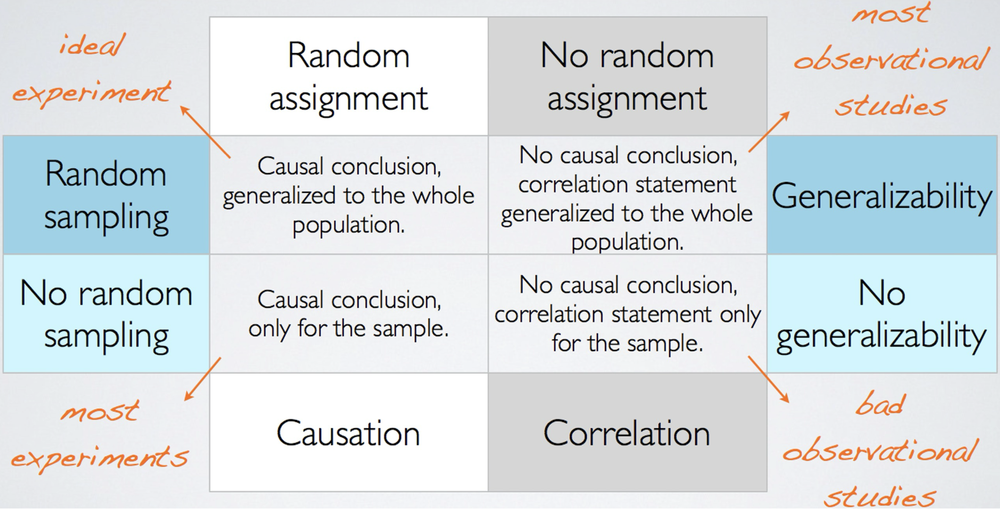
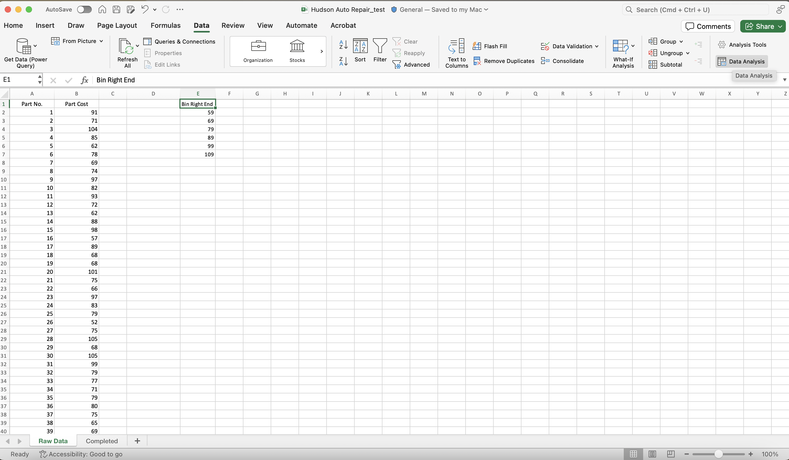
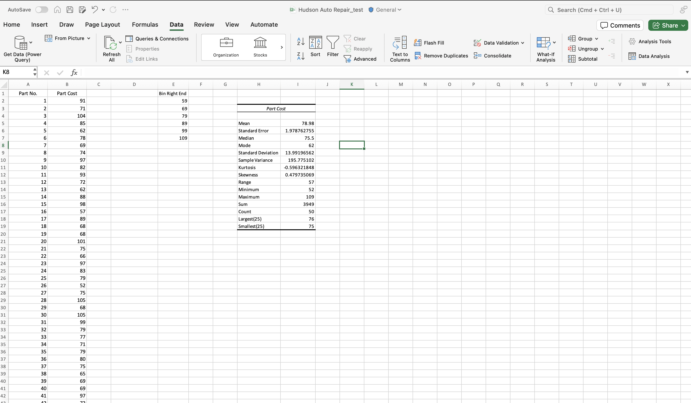
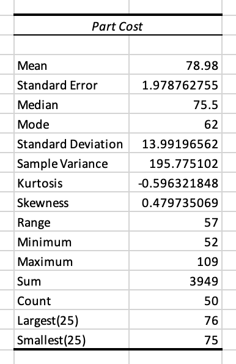

MGMT 30500: Business Statistics
Intro. & Basic Stat. & Prob. Rvw. 01
Welcome!
Overview
- Introductions
- Course Overview and Logistics
- Motivation
- Course Objectives
- Understand basic statistical concepts
- Apply statistical methods to business problems
- Key Topics
- Descriptive Statistics
- Inferential Statistics
Excel4stats
Introductions
Instructor
- Clinical Assistant Professor in the Management Department at Purdue University;
- My academic work addresses Political Communication, Data Science, Text as Data, Artificial Intelligence, and Comparative Politics.
Instructor’s Passions


Instructor’s Passions

Students
- It is your turn! - 5 minutes
- Present yourself to your left/right colleague and tell her/him what are the current two main passions in your life.
Course Overview and Logistics
Course Overview and Logistics
Materials:
Brightspace
Business Statistics
Text Book
Survey
Survey
10 min
Motivation
What is Statistics?
What is Statistics?
“Without data, you’re just another person with an opinion.” – W. Edwards Deming

What is Statistics?
Statistics can be defined as the science of collecting, analyzing, interpreting, presenting, and organizing data to make informed decisions.
Where is statistics applied in Business?
Where is statistics applied in Business?
Accounting
- To compare actual financial performance with budgeted amounts, identifying areas of inefficiency or unexpected costs.
Economics
- To analyze employment trends, wage distributions, and the impact of income on business opportunities, helping managers make informed decisions.
Finance
- Risk analysts to assess the probability of default on loans or bonds, aiding in the pricing of financial instruments and risk management strategies.
Data and Statistics
Data Sources and Scales of Measurement

Elements are the entities on which data are collected.
A variable is a characteristic of interest for the elements.
The set of measurements obtained for a particular element is called an observation.
A data set with \(n\) elements contains \(n\) observations.
The total number of data values in a complete data set is the number of elements multiplied by the number of variables.
Data Types
Categorical Data
- Labels or names used to identify an attribute of each element
- Often referred to as qualitative data
- Use either the nominal or ordinal scale of measurement
- Can be either numeric or nonnumeric
- Appropriate statistical analysis is rather limited
Quantitative Data
Quantitative data indicate how many or how much:
- discrete, if measuring how many - continuous, if measuring how muchQuantitative data are always numeric.
Ordinary arithmetic operations (+, -, ×, ÷) are meaningful for quantitative data
Data Types: Examples
| Categorical: Nominal | Categorical: Ordinal | Quantitative: Continuous or Discrete |
|---|---|---|
| Vehicle Type | Satisfaction Level | Temperature |
| Beverage | Education Level | Number of Transactions |
| Music Genre | Customer Feedback | Revenue |
| Nationality | Job Position | Product Weight |
| Relationship Status | Military Rank | Distance Traveled |
| Operating System | Priority Level | Market Share |
- Categorical: Nominal refers to variables that categorize data without a specific order.
- Categorical: Ordinal refers to variables that categorize data with a meaningful order but without a consistent difference between categories.
- Quantitative: Continuous or Discrete refers to variables that are numerical, where discrete variables are countable and continuous variables can take any value within a range.
Scales of Measurement

Scales of Measurement
- Categorical Data
- Definition: Data that can be sorted into categories or groups.
- Subcategories:
- Numeric: Categorical data represented by numbers, but the numbers do not have inherent numerical value.
- Nominal: Categories that have no inherent order. Examples include gender, type of car, and nationality.
- Ordinal: Categories that have a specific order or ranking. Examples include satisfaction levels (e.g., satisfied, neutral, dissatisfied) and education levels (e.g., high school, bachelor’s, master’s).
- Non-numeric: Categorical data not represented by numbers.
- Nominal: Similar to numeric nominal data but represented with non-numeric labels. Examples include types of cuisine (e.g., Italian, Chinese, Indian).
- Ordinal: Similar to numeric ordinal data but represented with non-numeric labels. Examples include rankings such as job positions (e.g., intern, junior, senior).
- Numeric: Categorical data represented by numbers, but the numbers do not have inherent numerical value.
- Quantitative Data
- Definition: Data that can be measured and expressed numerically.
- Subcategories:
- Numeric: Quantitative data always represented by numbers.
- Interval: Numerical data with meaningful differences between values but no true zero point. Examples include temperature in Celsius or Fahrenheit.
- Ratio: Numerical data with meaningful differences between values and a true zero point. Examples include height, weight, and sales figures.
- Numeric: Quantitative data always represented by numbers.
Cross-Sectional Data: Time Series

Study Design
Study Design
Observational
In observational studies, no attempt is made to control or influence the variables of interest. A survey is a good example.
An example of an observational study is researchers observing a randomly selected group of customers that enter a Walmart Supercenter to collect data on variables such as time spent in the store, gender of the customer, and the amount spent.
Experimental (Chapter 13)
In experimental studies, the variable of interest is first identified. Then, the values or levels (categories) of the variable are identified and controlled so that data from the experimental units (subjects) can be obtained about how they influence the variable of interest. Can have multiple variables.
The largest experimental study ever conducted is believed to be the 1954 Public Health Service experiment for the Salk polio vaccine. Nearly two million U.S. children (grades 1 through 3) were selected.
Study Design: Random Assignment vs. Random Sampling

Study Design

Descriptive Statistics
Summarizing and Presenting Data

Summarizing and Presenting Data

Summarizing and Presenting Data

Example: Hudson Auto Repair
The manager of Hudson Auto would like to have a better understanding of the cost of parts used in the engine tune-ups performed in her shop. She examines 50 customer invoices for tune-ups. The costs of parts, rounded to the nearest dollar, are listed on the next slide.

Tabular Summary: Frequency and Percent Frequency - Example
| Parts Cost ($) | Frequency | Percent Frequency |
|---|---|---|
| 50 to 59 | 2 | 4% |
| 60 to 69 | 13 | 26% |
| 70 to 79 | 16 | 32% |
| 80 to 89 | 7 | 14% |
| 90 to 99 | 7 | 14% |
| 100 to 109 | 5 | 10% |
| TOTAL | 50 | 100% |
Graphical Summary: Bar Chart or Histogram - Example

hudson_auto_repair.xlsx
File -> Options -> Add-ins -> Select Analysis ToolPak and Analysis ToolPak-VBA (also select StatTools 7.5, if available) -> Go -> Data -> Data Analysis (to conduct analyses)
Graphical Summary: Bar Chart or Histogram - Example
- Open Data Analysis Add-in

- Select Histogram

Graphical Summary: Bar Chart or Histogram - Example
- Input the ranges (data, bin limits, output cell)

- Result

Numerical Descriptive Statistics
The most common numerical descriptive statistic is the mean (or average).
The mean demonstrates a measure of the central tendency, central location, or center of mass of the data for a variable.
Hudson’s mean cost of parts, based on the 50 tune-ups studied, is $79 (found by summing up the 50 cost values and then dividing by 50).
There are other descriptive statistics (next chapter).
Numerical Descriptive Statistics - Example
- Open Data Analysis Add-in and select the Descriptive Statistics analysis

- Input the ranges (data, bin limits, output cell) and options

Numerical Descriptive Statistics - Example
- Result

- Let’s check the result

For percentiles: = percentile.exc(Data Array, %)
Statistical Inference
Statistical Inference

Population: the set of all elements of interest in a particular study.
Sample: a subset of the population.
Descriptive Statistics: Tabular, graphical, and numerical summaries of data.
Inferential Statistics: The process of using data from the sample to make estimates or test hypotheses about the characteristics of a population
Estimation: Using sample data to approximate population parameters.
Hypotheses Testing: Determining if there is enough evidence in a sample to support a claim about a population.
Prediction: Forecasting future events based on historical data.
Data Science, Big Data, and Data Mining
Data Science, Big Data, and Data Mining - Definitions
- Data Science:
- The interdisciplinary field that uses scientific methods, processes, algorithms, and systems to extract knowledge and insights from structured and unstructured data.
- Big Data:
- Extremely large datasets that may be analyzed computationally to reveal patterns, trends, and associations, especially relating to human behavior and interactions.
- Data Mining:
- The practice of examining large databases to generate new information, involving methods at the intersection of machine learning, statistics, and database systems.
How Data Science, Big Data, and Data Mining are Used
- Data Science:
- Personalizing marketing efforts by analyzing customer data to predict preferences and buying behavior.
- Optimizing supply chain management through predictive analytics.
- Big Data:
- Analyzing customer feedback and social media interactions to improve customer service and develop new products.
- Enhancing risk management in financial institutions by monitoring transaction patterns and detecting fraudulent activities.
- Data Mining:
- Identifying potential leads and sales opportunities by analyzing past sales data and customer demographics.
- Enhancing customer retention by understanding churn patterns and developing targeted retention strategies.
Summary
Summary
Some key takeaways from this session:
- Course Overview:
- Materials and resources available on Brightspace and the course webpage.
- You are welcome to join virtual office hours!
- If you need an individual appointment, e-mail me!
- Key Concepts:
- Importance of statistics in business decision-making.
- Study Design.
- Data summary and visualization good practices.
- Distinction between Descriptive and Inferential Statistics.
- Data Science, Big Data, and Data Mining